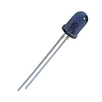
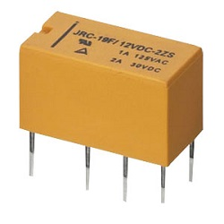
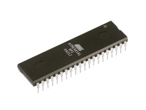
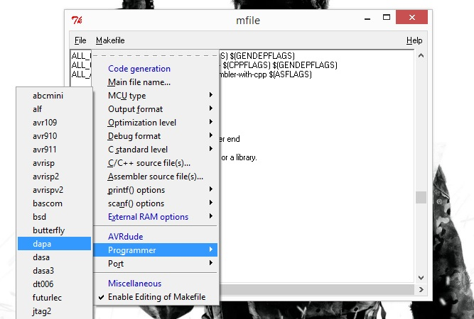
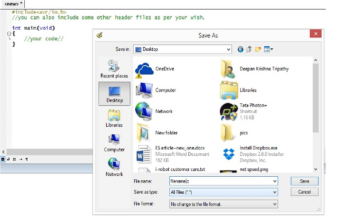
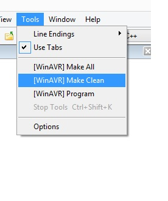
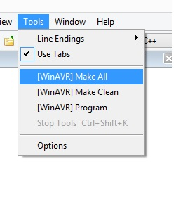
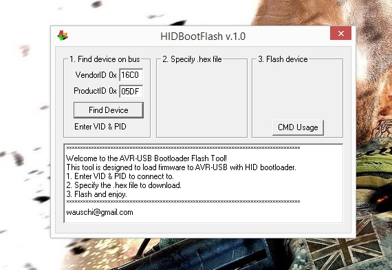
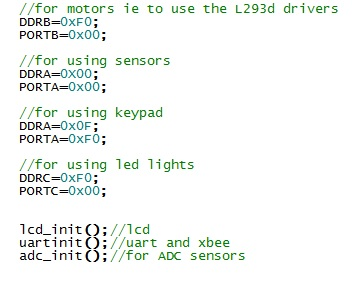

Hello friends, welcome to my blog . This is a place where you can get to know me, like what I am doing, my experience from day-to-day life etc. Hope you like it. Happy Blogging
Hello friends today I will tell you about Embedded Systems, how I came to know about it, how I learnt it, and now how I am enjoying it.
A general definition of embedded system is that it is a basic method of controlling or assisting various devices for a specific purpose. These are basic components which are installed in the device. Users in most cases are not even aware of their presence. For example a digital thermometer ,users think that it is just a device but inside it lies various components.
These are designed to do some specific task, rather than general purpose computer for multiple tasks. They are not always stand alone devices instead they have smaller parts that constitute to build a large device called embedded device. These can be operated using specifc programme instructions which are called as firmware They are stored in Microcontroller chips like ATMEGA 16,ATMEGA 32, LPC2148, ARM cortex etc.
Before diving into the world of embedded systems you should be aware of about voltage regulators, LEDs, LDRs (Light dependant resistors), IRLED (Infrared red LED), keys like SPST (single pull single throw), SPDT(single pull double throw), DPDT(double pull double throw), relays (basically switching devices), drivers (like L293D, L298D ICs for driving motors).
 
MICRO-CONTROLLERS are those devices that consists of both micro-processors and some ICs. The basic version of a micro-controller is an 8051 architecture. The 8051 architecture is basic element of an 8-bit micro-controller. I prefer to work on AVR micro-controller board with ATMEGA16 micro-controller. You can even go for ATMEGA8, ATMEGA32 etc.as per your wish.




This creates a hexfile ie a file with .hex extension. Now to load this .hex file onto the controller we require a software ie HID Bootflash. It is actually a loader.

To make you more aquanted with DDRX and PORTX concept I will say that we use them for declarations and initialisations. like:-

I hope that all of this is enough to start of with Embedded Systems. These are just the basics of Embedded Systems. First get a command on these basics then you can go on for high level projects on Embedded Systems. You can go through the Projects section of my website to know about my projects. You can even contact me if you want any sort of stuffs like micro-controller, micro-controller boards, lcd, uart, xbee, sensors etc.